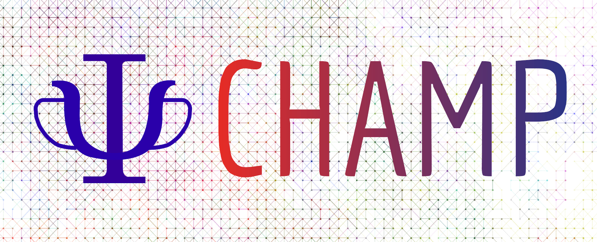
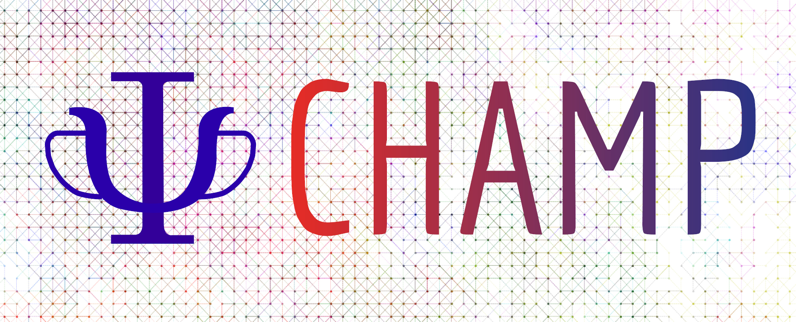

Excited states with Quantum Package and CHAMP
Table of Contents
 \(\longrightarrow\)
\(\longrightarrow\)
 \(\longrightarrow\)
\(\longrightarrow\)

\(\longrightarrow\)
\(\longrightarrow\)

1 Introduction
We will import a Hartree-Fock wavefunction from a TREXIO file into Quantum Package (QP), and run a two-state CIPSI calculation with these orbitals. The wavefunctions for the 2 states will be stored in the TREXIO file, and we will run wave function optimization in CHAMP, followed by a Diffusion Monte Carlo calculation.
The expected excitation energy is around 4 eV.
2 CIPSI calculation
You first need to install the trexio Python module:
pip install trexio
You can now import the single-determinant wave function from the provided TREXIO file:
qp_import_trexio.py COH2.trexio -o COH2 qp set_file COH2
Specify you want to run a two-state calculation:
qp set determinants n_states 2
Tell QP to stop when the number of determinants is larger than 5000
qp set determinants n_det_max 2000
Remark: the excitation energy is around 10 eV. This is because the orbitals in the TREXIO file are symmetry adapted, so it is impossible to make a determinant from another symmetry enter in the determinant space.
To obtain a solution from another symmetry, we need to put at least one determinant of each symmetry. The simplest practical solution is to first perform a CIS, and then continue with a CIPSI in the FCI space.
qp run cis | tee COH2.cis.out qp set determinants read_wf true qp run fci | tee COH2.fci.out
read_wf = true specifies that the wave function stored in the
EZFIO database should be used as a starting point for the the CI calculation.
Now, we have obtained a more reasonable excitation energy, around 4 eV. We can export the wavefunctions in the TREX file:
qp set trexio trexio_file COH2.trexio qp run export_trexio